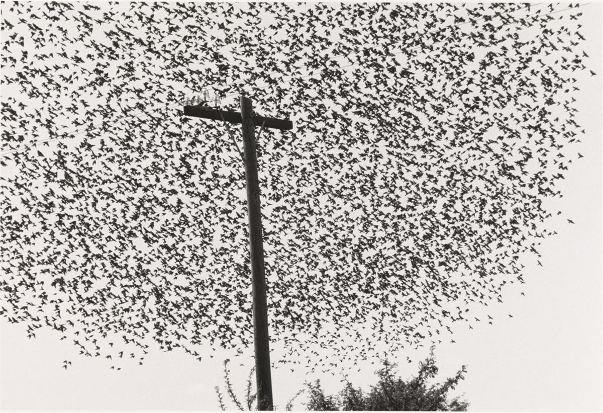
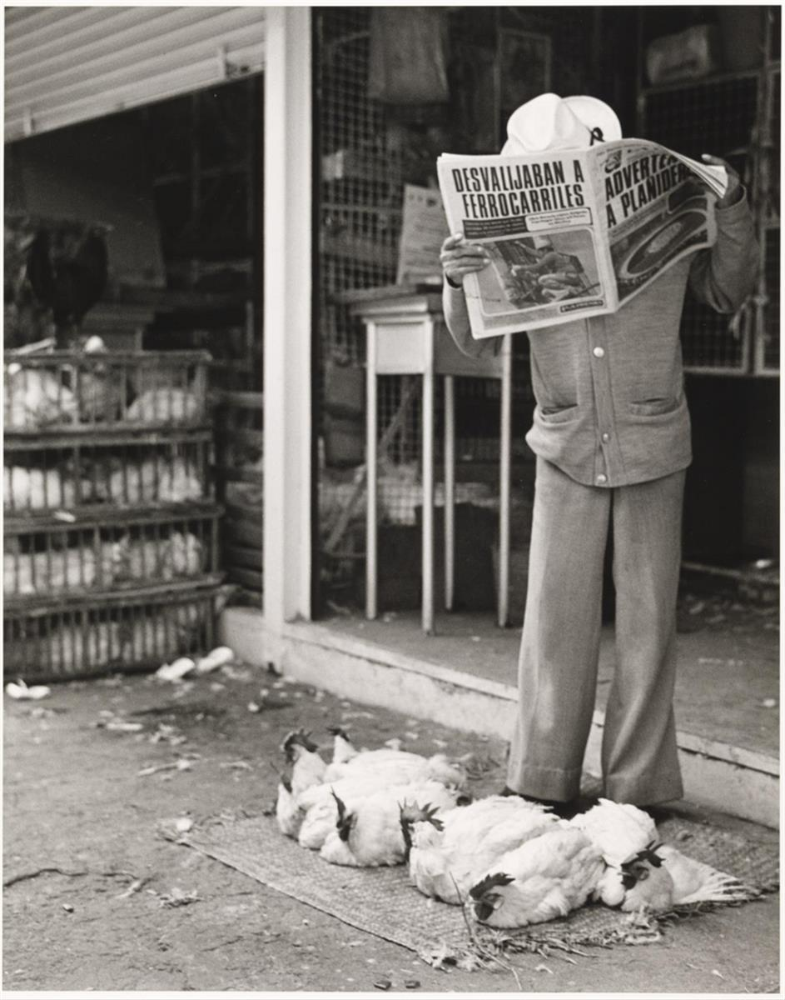

Graciela Iturbide Self-portrait in Trotsky’s house 200
Graciela Iturbide’s deep connection with the communities she photographs characterises the images in this display
A leading photographer in Latin America, Iturbide’s work has been collected by art museums across the world. She has described photography as ‘a pretext to know the world, to know life’. Her images in Mexico capture people, rituals and symbols from everyday life. They often show women and Indigenous peoples in the streets and other outdoor settings.
This display shows a selection of Iturbide’s work from the 1970s to the 2000s. It has a dual focus: her work in Mexico and images she took in the United States. Her early photographs represent everyday life in Mexico City and other urban areas. Another group of photographs is from the series Women of Juchitán, created in Juchitán, an indigenous town in the state of Oaxana, in southwestern Mexico. Also on display are Iturbide’s photographs of the Seri people, a group of historically semi-nomadic hunters and fishermen living in the Sonoran Desert of northwestern Mexico. Crossing the Mexico–US border, Iturbide has traced the life of Mexican immigrants in the border area and in Los Angeles. She reveals aspects of their daily lives and their cultural nostalgia.
This display consists of work from the Wilson Centre for Photography, London and the Tate collection.

Graciela Iturbide Birds on the Pole, Guanajuato, Mexico 1990

Graciela Iturbide Sonora Market, Mexico City 1978
Curated by Yasufumi Nakamori, with Amy Emmerson-Martin and Emma Jones
Tate Modern
Natalie Bell Building Level 2 West
Until 22 November 2020
Free
SOURCE: TATE MODERN